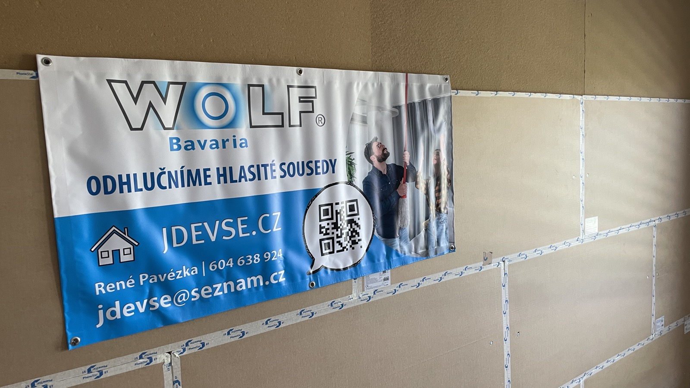
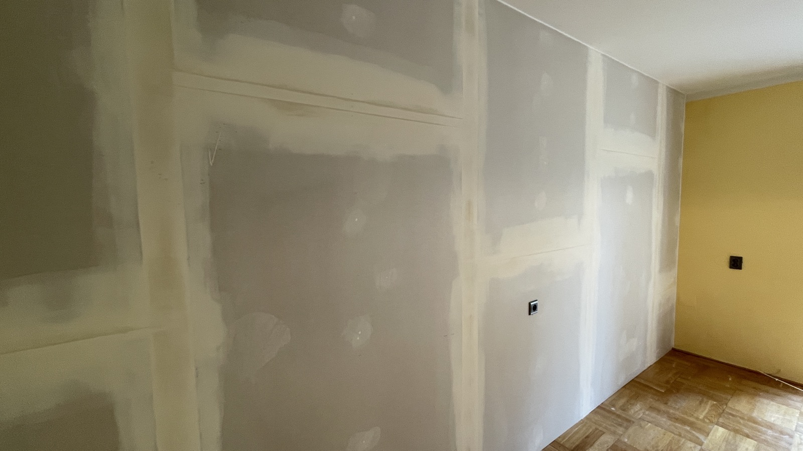
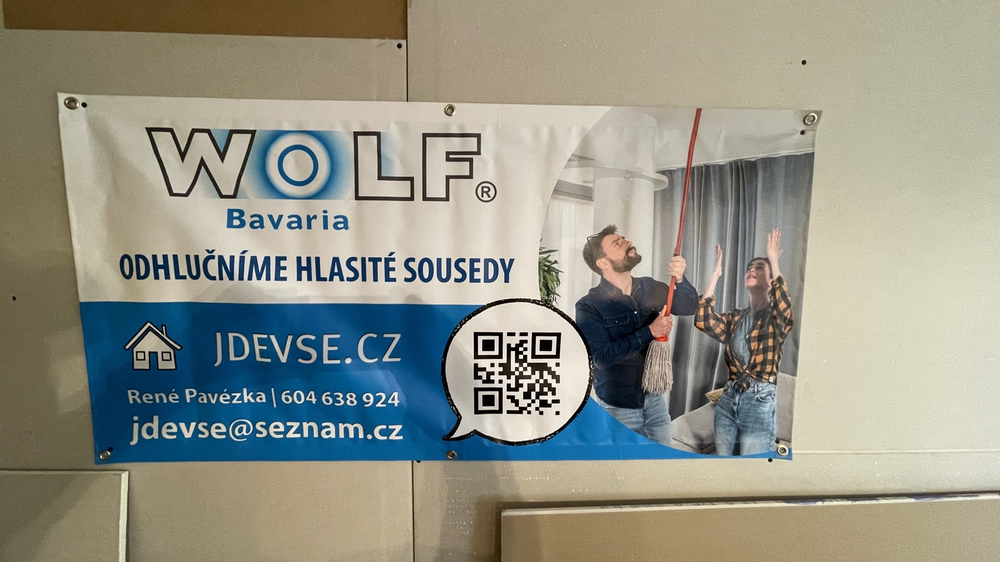
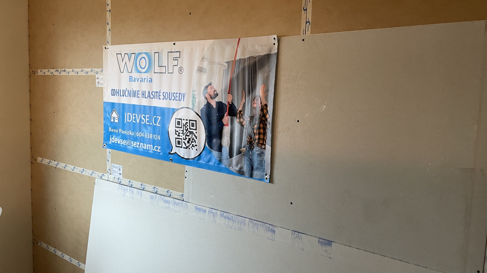
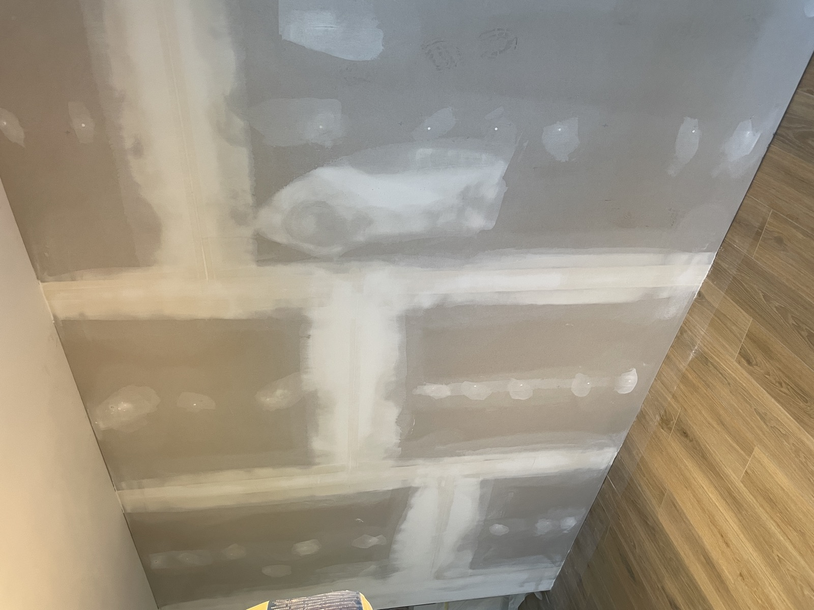

Byt · Karlín · 2025R'w 58 dB

Kancelářský open space−18 dB
SoundLab Studio Brno
SoundLab · BrnoRT60 0,3 s
Bistro Pravda
Bistro Pravda · 2024−22 dB

Výrobní hala · Mladá Bol.R'w 48 dB

Byt · Smíchov · 2024R'w 54 dB

Meeting roomy · PankrácR'w 52 dB
Hotelový pokoj
Hotel · Praha 1R'w 56 dB
Restaurace
Restaurace · Karlín−19 dB
Mastering studio HiFiKlub
HiFiKlub · PrahaRT60 0,28 s

Průmyslový areál · Otrokovice−24 dB

Vila · HanspaulkaR'w 60 dB

Telefonní boxy · kancelářský komplexR'w 50 dB
Hotelový pokoj
Hotel · Praha 2R'w 54 dB

Kavárna · Karlín−16 dB